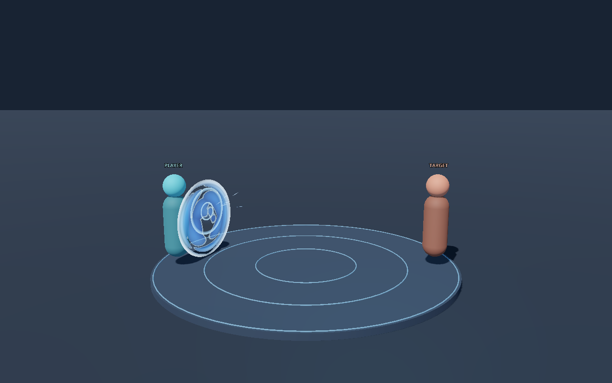

Godotの実際の描画を、1フレームずつ見る
60FPSで撮った f0〜f30（0〜0.5秒）の31枚です。ブラウザーで効果を作り直しているのではなく、制作時に Godot 4.7 と EffekseerForGodot4 で描画して保存したPNGを順に表示しています。

Godotの実際の描画を切り抜いて拡大
画像を選んで ← → で1フレームずつ、Home・End で最初と最後へ移動できます。再生は一度だけ進んで f30 で止まり、繰り返しません。白い接点は f4〜f8 の短い光です。
f10：星は消え、青い面の上を波紋が広がり、模様が流れます。左のダミーは面の横と奥に見えています。
フレームを読み込んでいます。
要所のフレーム
ガードを依頼する
AIのコーディングエージェントに渡した依頼の形です。効果の部分（【】）を自分のゲームの言葉に置き換えて使えます。この依頼は作例のための架空のものです。
Effekseer VFX スキル（kanaworksai-hue/effekseer-vfx-skill、固定コミット c28919890f0483c0f968a884ea03979803d3b528）の SKILL.md と、そこで必ず読むよう書かれた references を読んでから、次の効果を作ってください。 依頼：【架空のアクションゲームで、攻撃を受け止めた瞬間だけ出る青い防御ヒット。約0.5秒。薄い盾の輪郭→短い白い接点→青い面の波紋→隙間を開けた破片→消失。キャラクターを隠さない。一回のガード反応。】 進め方：まず vfx doctor でこの環境にできることを確かめ、ダウンロードが必要なら実行する前に私に確認してください。ブリーフとレシピを書き、brief-validate・lint・build のあと review でGodotの画像を実際に開いて見てください。1回に直すのは1種類の問題だけにします。仕上がったら review-handoff の指示書を、レシピを見ていない別のエージェントに渡して採点してもらい、overview と effect-verify まで進めてください。 報告：effect-verify が verified: true になったか、開いた画像、各回で直したこと、確かめていないこと（端末での性能、ゲームへの組み込みなど）を分けて書いてください。
レシピを書く
依頼を、要所のフレームを決めたブリーフにし、Pythonのレシピで層を組みます。時間は60FPSのフレームで数えます。
- 効果のID
VFX_Yebisu_Guard- 長さ
- 0.5秒（60FPSで30フレーム）
- 層と粒子
- 15層、粒子の上限27
- 乱数の種
- 1729
- 出る場所
- 防御する側（左のダミー）の、攻撃が来る側
- f2 下から伸びる薄い輪郭。まだ塗りも星もない
- f5 胸の高さに短い白い星。いちばん明るい瞬間
- f10 星は消え、青い面に波紋。ダミーの頭と胴が読める
- f16 面が崩れ、暗い隙間で6枚の破片に分かれる
- f23 破片が離れ、向きがばらけ、薄くなる
- f30 何も残らない
Godotで描く
レシピは原典スキルのコマンドで公式のEffekseer Coreに渡され、.efkefc と実行用の .efk になります。それをGodotの確認用の舞台で再生し、1280×800のフレームを撮ります。
- 描画した環境
- Windows x64、Godot 4.7 stable（Forward+）、公式 EffekseerForGodot4 1.80.5.1
- ビルド
- Effekseer Core 1.80.7、.NET 9.0.20。保存して開き直し、値を読み戻す確認つき
- 撮ったフレーム
- 標準の舞台で f0〜f30 と、終わったあとの f36。欠けたフレームなし
- 舞台
- 左が防御する側、右が攻撃する側のダミー。どちらも形だけの仮の人形です


見て直す：f16の破片
1回目の実描画では、冷えた青になるはずの破片が、白く光っていました。接点の白い星のあとに、2回目の白い出来事があるように見えてしまいます。


どちらもGodotの実際の描画を、同じ範囲で切り抜いて拡大しています。
- 原因を調べる 原典のコンパイラーは、時間で変わる色（color_curve）をSpriteとModelにだけ書き出します。破片に使ったRingは、外側・中央・内側の3つの固定の頂点色で描かれ、色の変化の指定は無視されていました。1回目の破片は、その頂点色が白だったため白く描かれていました。
- 2回目 破片の頂点色そのものを、中央が鮮やかな青、縁が暗い紺になるよう変えました。f16の破片は青くなり、白い星だけがいちばん明るい出来事になりました。
- 3回目 青い面のレシピに残っていた、効かない色の指定を消し、説明を実際の描かれ方に合わせました。見た目を変える回ではなく、2回目と3回目の32枚のフレームはすべて同じ画像でした。
青い面の見え方は、色が移り変わるのではなく、流れる模様、穴のあく崩れ方、形の動き、薄れ方で変わります。
確かめたこと
別のAIによる採点
レシピも制作の経緯も見ていない別のAIが、最終のフレームの一覧を0〜3で採点し、ship（出してよい）と判定しました。人による承認ではありません。
| すぐ何か分かる | 2 |
|---|---|
| 時間の流れ | 3 |
| 明るさの重なり | 3 |
| 形の変化 | 3 |
| 粒の動き | 2 |
| 置き場所 | 3 |
| 消え方 | 3 |
| 見分けやすさ | 2 |
任意の改善点として「f2〜f4に、ごく薄い楕円の全体を見せると、最初の輪郭が盾だと分かりやすい」と挙げられました。出すのを止める指摘は残っていません。原典の review-submit・overview・effect-verify で verified: true になっています。
Godotでの呼び出し
原典の TestApi.gd で12項目の確認が通りました。
- 再生の呼び出しと、置く位置・大きさ
- 速さと一時停止の反映、止めている間の時計
- 終わったあとの後片付けと、再生中の一覧からの削除
- 繰り返し再生、発生源の再開始、停止後の後片付け
飛び道具・ビームの呼び出しと、実機での性能は試していません。
明るい背景
効果だけを見る設定と、明るい背景でも描画して確認しました。明るい背景では、光を足して描く部分が淡く見えます。どんな背景でも同じように読みやすいとは言えません。
ファイル
ゲームで使う、または手元で作り直すためのファイルです。README に、この作例のフォルダから実行するコマンドがあります。
効果
- レシピ library/vfx/src/VFX_Yebisu_Guard.py
- ブリーフ library/vfx/briefs/VFX_Yebisu_Guard.json
- 実行用の .efk library/vfx/exports/（テクスチャは resources/）
- Effekseerの .efkefc library/vfx/effects/
- 展開したレシピ テクスチャ等のパスだけ相対パスに直しています
- vfx_manifest.json
描画と記録
- 0.5秒の動画 1280×800、60FPS、無音
- capture-manifest.json 各フレームの時刻とSHA-256
- 代表フレームの一覧・ライブラリの一覧
- samples.json 依頼と結果
- 解説動画のソース

この作例について
- このページは、保存した実際の描画を見るための画面です。ブラウザーでGodotやEffekseerを動かしたり、新しい効果を作ったりはしません。AIや外部のサービスにも接続しません。
- 依頼・ゲーム・ダミーの人形は架空のものです。実際のゲームへの組み込みと、端末での性能は試していません。
- 採点は別のAIによるもので、人の承認ではありません。レシピ・テクスチャ・ブリーフを変えた効果には、この確認は引き継がれません。変えたあとは、改めてレビューしてください。
- 0.5秒の動画と解説動画には、音声はありません。